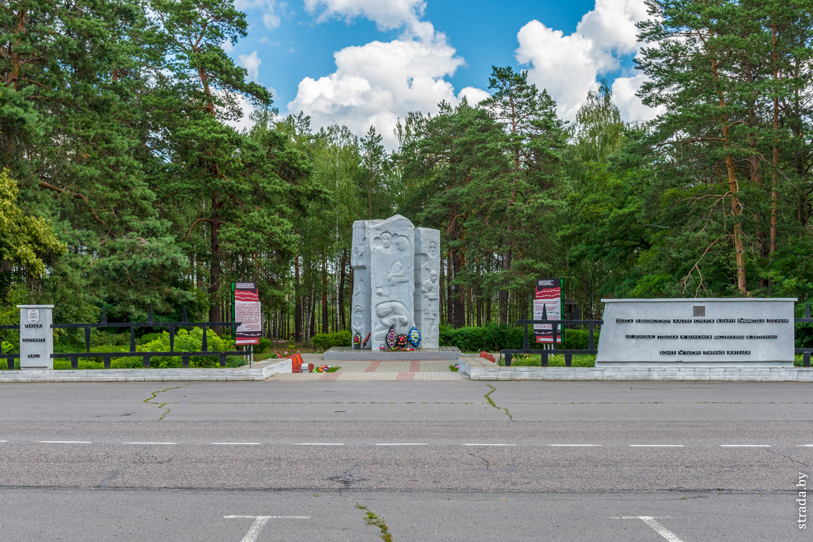
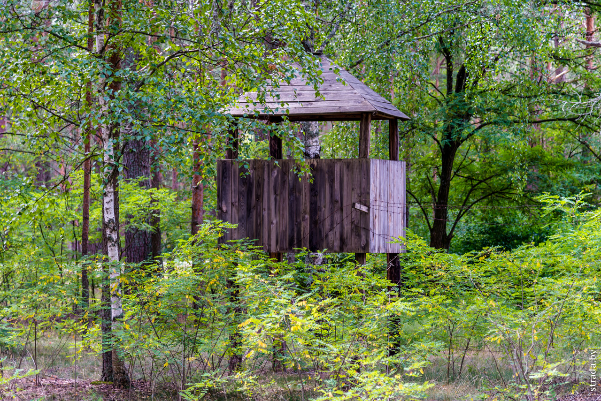
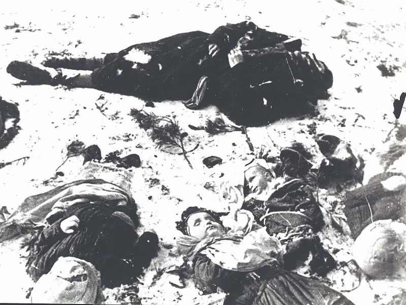
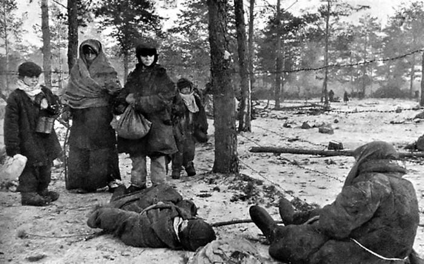

Концлагерь «Озаричи»
«9 марта 1944 года наступающие части Красной Армии
обнаружили на переднем крае немецкой обороны
три концентрационных лагеря, в которых находилось свыше
33 тысяч детей,нетрудоспособных женщин и стариков.»
так начинается сообщение чрезвычайной государственной комиссии
по установлению и расследованию злодеяний немецко-фашистских
захватчиково месте неподалёку от современных Озарич
Калинковичского района Гомельской области.
Лагеря размещались так: первый — на болоте у посёлка Дерть;
второй — в трех километрах северо-западнее местечка Озаричи;
третий — на болоте в трех километрах западнее деревни Подосинник.
Красноармейцы освободили из Озаричских лагерей 33 480 человек, среди которых было
15 960 детей в возрасте до 13 лет, 13 072 нетрудоспособные женщины и 4 448 стариков.

Мемориальный комплекс
"Люди, помните нас!" - гласит надпись слева. Справа написано о 9 тысячах жертв, но в современных источниках встречается большая цифра - 20 тысяч челоек.

Сторожевая вышка
Узников содержали за колючей проволокой. С вышек открывали огонь без предупреждения по любому, кто приближался к ограждению.

Люди
Фашисты размещали в этих лагерях не только здоровых и больных, переведенных из пересылочных пунктов, но и специально завозили в них советских граждан, больных сыпным тифом, из больниц и лазаретов. Это делалось для распространения болезней среди местного населения и в дальнейшем среди бойцов Красной армии.

Условия
Узники в морозы находились на заболоченной местности безо всяких построек. Ни о каких кострах и речи не шло, люди пили воду из проталин и питались чем придется. Умерших за пределы лагеря никто не вывозил.